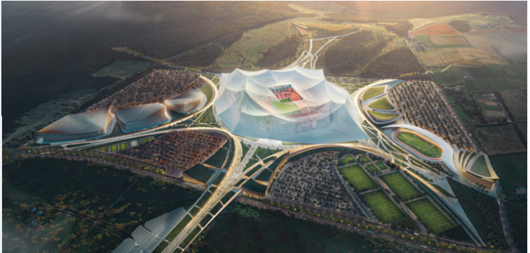
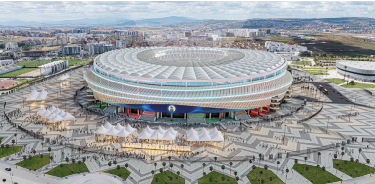
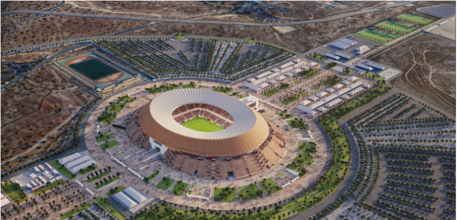
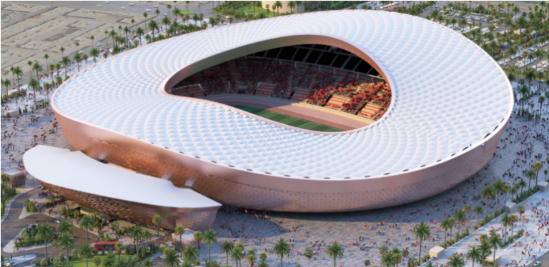
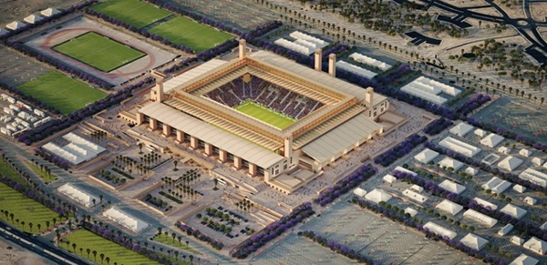

MOROCCO

Hassan II Stadium in Casablanca
The construction site of this monumental stadium will be spread over more than 100 hectares, offering enough space to accommodate 115,000 spectators. The future grand Hassan II stadium will not only be the largest in the competition, but also the largest ever built in the world. It will have to look like a white vessel sparkling against the green backdrop of the Benslimane forest. "Its design redefines innovation through radical simplicity, embracing pure geometry to create a striking transparent form," promises the Swiss architecture agency in charge of the project.

Grand stadium of Tangier
With a capacity of 65,000 numbered seats, the Grand Stade de Tangier has the latest-generation infrastructure enabling it to host the largest events in the best conditions. The renovation work has already completed the foundations of the stands, which will add more than 15,000 seats to the facility as part of the expansion work, thus allowing the stadium to have a new capacity exceeding 90,000 spectators

Prince Moulay Abdellah Stadium in Rabat
Built in 1980, the Moulay Abdellah stadium in Rabat has been completely demolished to make way for a brand-new sports complex with a capacity of 65,000 seats. Work is progressing rapidly so that the stadium is ready for the next two major events: the 2025 African Cup of Nations (CAN) and the 2030 FIFA World Cup.

Grand stadium of Agadir
Inaugurated in October 2013, the Grand Stade d’Agadir has already hosted major international events, such as the Club World Cup in 2013. With a capacity of 42,000, the stadium hosts football matches, as well as other sporting, professional and cultural events, such as music concerts, corporate seminars and gala evenings. The renovation work will take place in two stages: the first in preparation for the 2025 African Cup of Nations, and the second in preparation for the 2030 World Cup.

Fez Stadium
The renovation project of the Fez Stadium provides for the removal of the athletics track, in order to build new stands, with a capacity of 10,000 additional seats. These changes will increase the total capacity to 46,000 seats. Built in the 1990s, the Fez Sports Complex currently has a capacity of 35,600 seats.

The Grand Stadium of Marrakech
The Grand Stade de Marrakech will be brought up to CAF standards for the 2025 CAN and FIFA standards for the 2030 World Cup. With a capacity of 42,000 seats, it will also be able to host group matches or World Cup qualifying matches. The renovation work will be carried out in two phases, before and after the 2025 CAN. This work will concern the changing rooms, stands, adjoining stadiums and lighting.